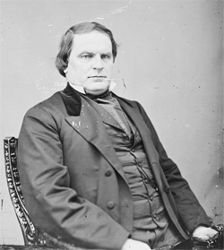

|
With the surrender of the Southern forces, the Confederate state
government of Alabama ceased to exist, and on June 21, 1865, President
|

Lewis E. Parsons
|
Andrew Johnson appointed Lewis E. Parsons Provisional Governor. In
accordance with the Presidential Plan of Reconstruction, Parsons was to
initiate a state government by calling on the existing electorate to
choose delegates for a constitutional convention to propose amendments
to the state constitution. The voting provisions excluded all blacks as
well as those former Confederates exempted from the President's
Proclamation of Amnesty of May 29, 1865.
Parsons carried out the President's wishes. Chosen at an election
late in August, the convention met on September 12, abolished slavery,
declared the secession ordinance "null and void," and repudiated the
rebel debt. It also provided for elections for a legislature, Governor,
and members of Congress.
The elections were held and the legislature convened on November 20.
It ratified the Thirteenth Amendment and passed a black code that was
less onerous than that of neighboring states but still left freedmen in
a distinctly inferior position. It also elected George S. Houston and
Governor Parsons as U.S. Senators, although neither they nor the
delegation to the House of Representatives was seated.
Less affected than other areas by wartime devastation, Alabama
gradually experienced an economic recovery. The former plantation system
was transformed into an economy marked by sharecropping, and the
extensive coal deposits around Birmingham eventually gave rise to
sustained industrial development.
Largely because of the unwillingness of Southerners to grant equal
rights to freedmen, in March 1867 Congress passed the Reconstruction
Acts, which placed Alabama once more under military rule. Together with
Georgia and Florida, it constituted the Third Military District
commanded by General John Pope (later by George Gordon Meade). The law
called for a new convention elected by universal male suffrage,
including blacks but excluding a number of former Confederates. Meeting
in November 1867, this convention drew up a radical constitution
safeguarding racial equality, which it submitted to the voters in
February 1868. However, when the conservatives, in order to defeat the
constitution, registered but abstained from voting, it failed to obtain
the necessary majority. To remedy this difficulty, Congress passed a
supplementary Reconstruction Act providing for the adoption of
constitutions by a majority of ballots actually cast. Nevertheless,
Alabama was readmitted in July 1868 without holding new elections.
The new government, consisting largely of scalawags, carpetbaggers,
and a decided minority of blacks--including the highly competent James
T. Rapier--ratified the Fourteenth Amendment, set up a public school
system, and sought to protect the freedmen. Hampered by Republican
factionalism, corruption, and the hostility of most whites, however, the
Reconstructionists were unable to deal effectively with the Ku Klux Klan
and other terrorist bands organized to subvert the government. Further
weakened by the Grant administration's failure to support it adequately,
the Republican regime was unable to prevent the conservatives, who had
already elected a governor in 1870, from recapturing the state in 1874.
Source: Hans Trefousse, Historical Dictionary of Reconstruction
(Westport, CT: Greenwood Press, 1991), 1-2.
|